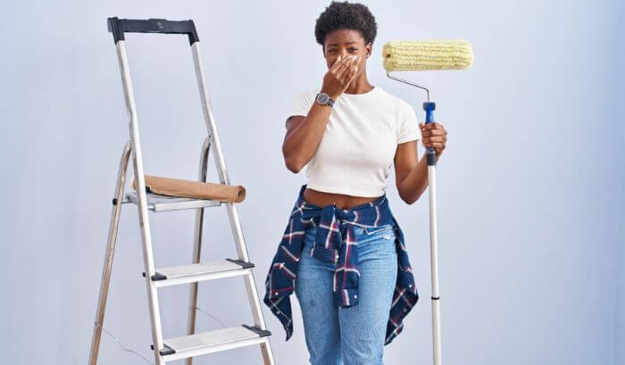

Saiba como tirar cheiro de tinta do ambiente
Descubra dicas de como se livrar do cheiro de tinta!

A pintura de paredes, móveis ou qualquer outra superfície garante não só uma nova cor, mas também vida. No entanto, um dos inconvenientes mais comuns depois que o processo é finalizado, sem dúvidas, é o cheiro característico do material, que pode durar um tempo considerável.
Se depois de pintar um espaço, você fica com medo de transitar por ele ou até mesmo ir dormir com cheiro de tinta, saiba que a inalação prolongada de substâncias químicas presentes na tinta pode ser, sim, uma exposição perigosa, especialmente se não forem tomadas medidas adequadas para ventilação e remoção do odor.
Além do desconforto causado pelo cheiro, essa exposição pode impulsionar irritação das vias respiratórias, dor de cabeça, náusea e tontura.
Por isso, é importante garantir uma ventilação adequada não só após o processo de pintura, mas também durante, mantendo janelas e portas do ambiente abertas e utilizando os equipamentos de proteção individual recomendados, como máscaras e respiradores.
Outra solução é optar por tintas de qualidade com baixo teor de COVs e, sempre que possível, à base de água, pois o odor tende a ser menos intenso, assim como a emissão de substâncias prejudiciais.
Como amenizar cheiro de tinta?
Se você deseja se livrar do cheiro de tinta o quanto antes, confira a seguir diversas dicas e métodos que vão te ajudar — muitas delas sem a necessidade de um produto para tirar cheiro de tinta específico.
Ventilação adequada
Como já comentamos, uma das formas mais eficazes de reduzir o cheiro de tinta é garantir uma ventilação adequada no ambiente. Portanto, durante e após a pintura, deixe todas as janelas e portas abertas para que o ar circule.
Uma alternativa é utilizar ventiladores para ajudar a direcionar o ar fresco para dentro e o ar contaminado para fora. Com isso, a dissipação do odor da tinta será acelerada.
Carvão ativado
O carvão ativado é conhecido por conter propriedades de absorção de odores. Não por acaso, é comum que as pessoas o coloquem dentro da geladeira.
Em um espaço pintado recentemente, basta distribuir algumas peças de carvão ativado. Ele irá absorver as partículas voláteis liberadas pela tinta, ajudando a eliminar o cheiro rapidamente.
Purificadores de ar
Os purificadores de ar são dispositivos úteis na hora de descobrir como tirar cheiro de tinta da casa. Contudo, é preciso que o aparelho esteja com filtro de carvão ativado ou filtro HEPA (High Efficiency Particulate Air).
Amônia
Há, ainda, outra maneira de amenizar o cheiro de tinta. Coloque no ambiente uma panela grande com água e uma colher de sopa de amônia. Isso refrescará o ambiente que está sendo pintado. Deixe a panela durante toda a noite.
Recipiente com água
Uma técnica simples e econômica é colocar um recipiente com água no ambiente pintado. Esse recurso natural vai ajudar a absorver e neutralizar as partículas voláteis da tinta e, consequentemente, diminuir o odor.
Se você quiser intensificar esse efeito, vale adicionar algumas gotas de óleos essenciais na água. Um aroma agradável vai tomar conta do espaço!